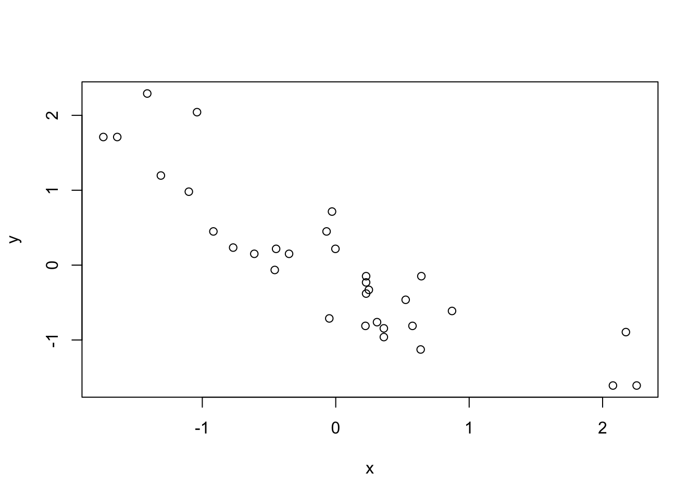

#> Regularizar os dados
mtcars_scaled <- as.data.frame(scale(mtcars))
y <- mtcars_scaled$mpg
x <- mtcars_scaled$wt
N <- nrow(mtcars_scaled)Entendendo o Gradiente Descent (GD)
O Gradient Descent (GD), também conhecido como steepest descent ou até como Stochastic Gradient Descent (SGD)1, é um algoritmo fundamental em otimização que desempenha um papel crucial no ajuste de parâmetros de modelos de machine learning. Basicamente, o GD utiliza a informação do gradiente de uma função, que se quer otimizar, para encontrar o “caminho” em que ela decaí mais rapidamente.
No caso mais típico, da minimização de uma função de perda, o GD ou SGD usa o gradiente da função para encontrar os valores dos parâmetros que minimizam esta função. O algoritmo opera iterativamente e, idealmente, aproxima-se gradualmente da solução correta.
Assim, a utilidade geral do GD reside na sua capacidade de iterativamente encontrar o mínimo de funções usando relativamente pouca informação.
Regressão Simples
Um pouco de matemática
Para tornar as coisas mais concretas vamos considerar o caso de uma regressão linear simples. Temos uma variável de resposta \(y\) que será “explicada” por uma variável independente (feature) \(x\) . A relação é modelada de maneira linear como:
\[ y = \beta_{0} + \beta_{1}x + \varepsilon \]
A equação acima descreve o nosso modelo, que será estimado posteriormente. Com este modelo podemos calcular os valores preditos \(\hat{y_{i}}\) que serão comparados com os valores observados (reais) \(y_{i}\). Nosso objetivo é ajustar os parâmetros \(\beta_{0}\) e \(\beta_{1}\) para minimizar a função de custo, que pode ser representada como o Erro Quadrático Médio (MSE, do inglês Mean Squared Error):
\[ \text{MSE} = \frac{1}{n} \sum_{i=1}^{n} (y_i - \hat{y_{i}})^2= \frac{1}{n} \sum_{i=1}^{n} (y_i - (\beta_0 + \beta_1 X_i))^2 \]
Para atualizar os parâmetros \(\beta_0\) e \(\beta_1\) usando GD, precisamos calcular o gradiente da função de custo em relação a esses parâmetros. A primeira derivada da função de custo em relação a \(\beta_0\) e \(\beta_1\) nos dá as direções em que devemos ajustar esses parâmetros para minimizar a função de custo.
A primeira derivada da função de custo em relação a \(\beta_0\) é dada por:
\[ \frac{\partial \text{MSE}}{\partial \beta_0} = \frac{-2}{n} \sum_{i=1}^{n} (y_i - (\beta_0 + \beta_1 x_i)) \]
E a primeira derivada da função de custo em relação a \(\beta_1\) é dada por:
\[ \frac{\partial \text{MSE}}{\partial \beta_1} = \frac{-2}{n} \sum_{i=1}^{n} x_i (y_i - (\beta_0 + \beta_1 x_i)) \]
Essas derivadas nos fornecem a direção em que devemos ajustar os parâmetros para minimizar a função de custo.
Implementando o algoritmo
O algortimo de GD funciona iterativamente O algoritmo de SGD atualiza o parâmetro \(\beta^{t}\) a cada iteração t, onde \(\beta^{0}\) é dado, usando o gradiente \(\nabla_{\beta}^t\) da seguinte maneira:
\[ \beta^{t+1} = \beta^{t} - \gamma\nabla_{\beta}^{t} \]
onde \(\gamma\) é um número real não-negativo, tipicamente próximo de 0.001, chamado “learning rate”. Quanto maior for o valor de \(\gamma\) maiores serão os “passos” no processo de atualização; inversamente, quanto menor for o valor de \(\gamma\) menores serão os “passos”no processo iterativo.
Para implementar o passo-a-passo do algoritmo vamos usar a base mtcars. O primeiro passo é ajustar os dados usando a função scale. Em seguida, separamos alguns objetos úteis para facilitar a exposição.
Vamos fazer a regressão de mpg (milhas por galão), uma medida da eficiência do veículo, contra wt (peso), o peso do veículo. Visualmente, parece haver uma relação linear decrescente entre as variáveis.
plot(y ~ x)
Antes de fazer o loop, vamos decompor o algoritmo em etapas. Primeiro, precisa-se de valores iniciais para os parâmetros \(\beta_{0}\) e \(\beta_{1}\). Por simplicidade, vamos sortear números aleatórios entre 0 e 1 a partir de uma distribuição uniforme. Com estes valores será possível calcular o valor de \(\hat{y}_{i}^0\), onde 0 indica que estamos na iteração de valor 0.
b0 <- runif(1)
b1 <- runif(1)
(yhat <- b0 + b1 * x) [1] 0.33357324 0.43639854 0.21260228 0.57349896 0.66422717 0.67229190
[7] 0.71664792 0.56341804 0.54728858 0.66422717 0.66422717 0.91826617
[13] 0.78116576 0.80132758 1.39408525 1.46424840 1.43239272 0.16421390
[19] -0.07167945 0.01703258 0.27107158 0.69648609 0.66221099 0.82552177
[25] 0.82753796 0.05735623 0.14001971 -0.11280958 0.55535331 0.39405871
[31] 0.71664792 0.39809108Não é necessário, mas é instrutivo calcular a função de perda.
(mse <- mean((y - yhat)^2))[1] 2.112771Agora, calculamos o valor do gradiente neste ponto.
(gb0 <- sum(y - yhat) * (-2/N))[1] 1.148812(gb1 <- sum((y - yhat) * x) * (-2/N))[1] 2.44553Por fim, o valor dos parâmetros é atualizado segundo a fórmula matemática do algoritmo. Utiliza-se \(g = 0.01\) como valor para a learning-rate.
g = 0.01
(b0_new <- b0 - g * gb0)[1] 0.5629181(b1_new <- b1 - g * gb1)[1] 0.3700945Este processo será repetido \(T\) vezes até que se atinja algum critério de convergência. Em geral, estabelece-se
- Um número máximo de iterações. (10.000 iterações, por exemplo).
- Um valor mínimo de mudança na estimativa dos parâmetros. Isto é, quando o valor das estimativas para de mudar significativamente, entende-se que ele convergiu para um valor satisfatório.
Para deixar o loop abaixo mais simples, vou simplesmente estabelecer um número máximo de 5000 iterações. O código segue abaixo. Note que algumas partes do código acima foram repetidas por conveniência da leitura.
num_iterations <- 1000
#> Learning-rate
g <- 0.01
y <- mtcars_scaled$mpg
x <- mtcars_scaled$wt
N <- nrow(mtcars_scaled)
#> Valores iniciais para estimativas dos parâmetros
b0 <- runif(1)
b1 <- runif(1)
for (i in seq_len(num_iterations)) {
if (i %% 100 == 0) cat("Iteração: ", i, "\n")
#> Calcula o valor previsto
yhat <- b0 + b1 * x
#> Calcula a "função de perda"
error <- y - yhat
mse <- mean(error^2)
if (i %% 100 == 0) {
cat("Valor da perda: ", as.numeric(mse), "\n")
}
#> Calcula o gradiente nos pontos atuais
gb0 <- sum(y - yhat) * (-2/N)
gb1 <- sum((y - yhat) * x) * (-2/N)
#> Atualiza o valor dos parâmetros usando o gradiente
b0_new <- b0 - g * gb0
b1_new <- b1 - g * gb1
b0 <- b0_new
b1 <- b1_new
if (i %% 100 == 0) {
cat("Betas: ", c(b0, b1), "\n\n")
}
}Iteração: 100
Valor da perda: 0.2860836
Betas: 0.112221 -0.6852286
Iteração: 200
Valor da perda: 0.2403437
Betas: 0.0148827 -0.8418728
Iteração: 300
Valor da perda: 0.2394607
Betas: 0.001973738 -0.8640144
Iteração: 400
Valor da perda: 0.2394436
Betas: 0.0002617562 -0.8671442
Iteração: 500
Valor da perda: 0.2394432
Betas: 3.471399e-05 -0.8675866
Iteração: 600
Valor da perda: 0.2394432
Betas: 4.603754e-06 -0.8676491
Iteração: 700
Valor da perda: 0.2394432
Betas: 6.105479e-07 -0.8676579
Iteração: 800
Valor da perda: 0.2394432
Betas: 8.097059e-08 -0.8676592
Iteração: 900
Valor da perda: 0.2394432
Betas: 1.073828e-08 -0.8676593
Iteração: 1000
Valor da perda: 0.2394432
Betas: 1.424107e-09 -0.8676594 Para recuperar o valor final dos betas.
c(b0, b1)[1] 1.424107e-09 -8.676594e-01Para efeito didático, vamos comparar estas estimativas finais contra os valores estimados pela função lm. Note que os valores estão muito similares
summary(model_lm <- lm(mpg ~ wt, data = mtcars_scaled))
Call:
lm(formula = mpg ~ wt, data = mtcars_scaled)
Residuals:
Min 1Q Median 3Q Max
-0.75381 -0.39236 -0.02077 0.23388 1.14033
Coefficients:
Estimate Std. Error t value Pr(>|t|)
(Intercept) 1.040e-15 8.934e-02 0.000 1
wt -8.677e-01 9.077e-02 -9.559 1.29e-10 ***
---
Signif. codes: 0 '***' 0.001 '**' 0.01 '*' 0.05 '.' 0.1 ' ' 1
Residual standard error: 0.5054 on 30 degrees of freedom
Multiple R-squared: 0.7528, Adjusted R-squared: 0.7446
F-statistic: 91.38 on 1 and 30 DF, p-value: 1.294e-10Visualizando o processo
Sempre que possível, é útil visualizar o funcionamento do algoritmo em gráficos. Como estamos trabalhando com um exemplo simples, pode-se plotar os resultados gradativamente num gráfico de dispersão. O código abaixo mostra como a linha de ajuste (linha de regressão) vai se alterando à medida que se aumenta o número de amostras.
Code
num_iterations <- 1000
#> Learning-rate
alpha <- 0.01
y <- dat$mpg
x <- dat$wt
N <- nrow(dat)
#> Valores iniciais para estimativas dos parâmetros
b0 <- runif(1)
b1 <- runif(1)
betas <- matrix(ncol = 2, nrow = num_iterations)
for (i in seq_len(num_iterations)) {
#> Calcula o valor previsto
yhat <- b0 + b1 * x
#> Calcula a "função de perda"
error <- y - yhat
mse <- mean(error^2)
#> Calcula o gradiente nos pontos atuais
gb0 <- sum(y - yhat) * (-2/N)
gb1 <- sum((y - yhat) * dat$wt) * (-2/N)
#> Atualiza o valor dos parâmetros usando o gradiente
b0_new <- b0 - alpha * gb0
b1_new <- b1 - alpha * gb1
b0 <- b0_new
b1 <- b1_new
betas[i, 1] <- b0_new
betas[i, 2] <- b1_new
}
sel <- c(1:10, seq(20, 100, 10), seq(100, 1000, 50))
library(ggplot2)
library(gganimate)
library(tibble)
tbl_betas <- tibble(
iter = sel,
beta0 = betas[sel, 1],
beta1 = betas[sel, 2]
)
ggplot() +
geom_point(
data = dat,
aes(x = wt, y = mpg),
shape = 21
) +
geom_abline(
data = tbl_betas,
aes(intercept = beta0, slope = beta1),
color = "#CB181D",
lwd = 0.8
) +
geom_text(
data = tbl_betas,
aes(x = 1.8, y = 1.8, label = paste("Iteration:", iter)),
size = 5
) +
transition_states(iter) +
enter_fade() +
exit_shrink() +
theme_bw()Regressão Múltipla
Agora vamos considerar o caso de regressão múltipla, onde temos várias variáveis independentes. A equação do modelo é generalizada para:
\[ y = \beta_0 + \beta_1 x_1 + \beta_2 x_2 + ... + \beta_k x_k \]
Isto é, agora temos \(k\) variáveis independentes, \(x_1, x_2, ..., x_k\), e temos \(k\) coeficientes, \(\beta_0, \beta_1, \beta_2, ..., \beta_k\), a ser estimados. A função de custo torna-se:
\[ \text{MSE} = \frac{1}{n} \sum_{i=1}^{n} (y_i - (\beta_0 + \beta_{1} x_{i1} + \beta_2 x_{i2} + ... + \beta_k X_{ik}))^2 \]
Agora, as derivadas parciais da função de custo em relação a cada parâmetro \(\beta\) são calculadas e utilizadas para atualizar os coeficientes durante o GD.
\[ \nabla_{\beta} = (\frac{\partial\text{MSE}}{\partial\beta_{0}}, \frac{\partial\text{MSE}}{\partial\beta_{1}}, ..., \frac{\partial\text{MSE}}{\partial\beta_{k}}) \]
Regressão Múltipla com Matrizes
Na regressão múltipla, podemos representar os dados de entrada \(X\) e os parâmetros do modelo \(\beta\) como matrizes. Esta forma de representação é mais prática quando temos muitas variáveis e permite dispensar o uso de somatórios.
Suponha que tenhamos \(n\) observações e \(k\) variáveis independentes.
As observações de entrada podem ser organizadas em uma matriz \(X\) de dimensão \(n \times (k+1)\), onde a primeira coluna é composta por \(1\)s para representar o intercepto do modelo. Assim, a matriz \(X\) é dada por:
\[ X = \begin{bmatrix} 1 & x_{11} & x_{12} & \cdots & x_{1p} \\ 1 & x_{21} & x_{22} & \cdots & x_{2p} \\ \vdots & \vdots & \vdots & \ddots & \vdots \\ 1 & x_{n1} & x_{n2} & \cdots & x_{nk} \end{bmatrix} \]
Os parâmetros do modelo \(\beta\) podem ser representados como um vetor de coeficientes de dimensão \((k+1) \times 1\). Assim, o vetor \(\beta\) é dado por:
\[ \beta = \begin{bmatrix} \beta_0 \\ \beta_1 \\ \vdots \\ \beta_k \end{bmatrix} \]
A resposta \(y\) pode ser representada como um vetor de dimensão \(n \times 1\).
\[ y = \begin{bmatrix} y_0 \\ y_1 \\ \vdots \\ y_n \end{bmatrix} \]
Note que o problema de minimização acima é equivalente a minimizar a soma do erro ao quadrado do modelo. Isto acontece pois o erro, no caso mais simples, é simplesmente
\[ \varepsilon = y_i - \hat{y_i} = y_i - \beta_{0} - \beta_{1}x_i \]
e o problema de minimizar:
\[ \text{min } \varepsilon^2 = (y_i - \hat{y_i})^2 \]
Em termos matriciais temos:
\[ e = y - \hat{y} = y - X\beta \] e agora o problema de minimizar
\[ \text{min } e^te = (y - X\beta)^t(y-XB) \]
Para encontrar o gradiente da função de custo \(e^te\), em relação aos parâmetros \(\beta\), podemos usar cálculo matricial.
O gradiente \(\nabla_{\beta} (e'e)\) é dado por:
\[ \nabla_{\beta} (e'e) = -2X^T(y - X\beta) \]
Onde \(X^T\) representa a transposta da matriz X. Este gradiente nos fornece a direção em que devemos ajustar os (múltiplos) parâmetros \(\beta\) para minimizar a função de custo \(e'e\).
Implementando o algoritmo
Desta vez, vamos implementar tanto o gradiente como a função de perda como functions no R.
grad <- function(beta) {
(2/N) * t(X) %*% (X %*% beta - y)
}
loss <- function(beta) {
e = y - X %*% beta
t(e) %*% e
}O modelo
Nosso modelo de regressão agora terá a forma:
\[ \text{mpg} = \beta_{0} + \beta_{1}\text{wt} + \beta_{2}\text{qsec}+ \beta_{3}\text{am} \]
onde mpg e wt tem as mesmas definições dadas acima; já qsec é uma medida de velocidade do veículo e am é uma variável binária que indica se o câmbio do veículo é manual ou automático.
Os dados
Desta vez, o preparo dos dados será feito usando o pacote dplyr.
library(dplyr)
dat <- mtcars |>
select(c("mpg", "wt", "qsec", "am")) |>
mutate(across(everything(), ~as.numeric(scale(.x))))
y <- dat$mpg
X <- as.matrix(dat[, c("wt", "qsec", "am")])
X <- cbind(1, X)
colnames(X)[1] <- c("coef")
N <- nrow(X)Primeira iteração
Novamente, para ganhar um pouco de intuição vamos rodar o
#> Valor inicial para os betas
beta <- runif(ncol(X))
# Opcional
#> Computa a "predição" do modelo
yhat <- X %*% beta
#> Calcula o valor da função de perda
l <- loss(beta)
#> Atualiza o valor dos beta
beta_new <- beta - alpha * grad(beta)O loop completo
O código abaixo mostra o loop completo. Fora algumas pequenas modificações, ele é exatamente igual ao loop anterior. Neste segundo exemplo, eu reduzo o valor da learning-rate e aumento o número de iterações.
Code
beta <- runif(ncol(X))
num_iterations <- 10000
alpha <- 0.001
for (i in seq_len(num_iterations)) {
if (i %% 1000 == 0) cat("Iteração: ", i, "\n")
#> Calcula o valor previsto
yhat <- X %*% beta
#> Calcula a "função de perda"
vl_loss <- loss(beta)
if (i %% 1000 == 0) {
cat("Valor da perda: ", as.numeric(vl_loss), "\n")
}
#> Calcula o gradiente nos pontos atuais
grad_current <- grad(beta)
#> Atualiza o valor dos parâmetros usando o gradiente
beta_current <- beta - alpha * grad_current
beta <- beta_current
if (i %% 1000 == 0) {
cat("Betas: ", beta, "\n\n")
}
}Iteração: 1000
Valor da perda: 9.455926
Betas: 0.1309512 -0.08362166 0.5981053 0.7911146
Iteração: 2000
Valor da perda: 6.562313
Betas: 0.01768686 -0.2744187 0.5436181 0.6104938
Iteração: 3000
Valor da perda: 5.516612
Betas: 0.002388867 -0.3935967 0.4873342 0.4898478
Iteração: 4000
Valor da perda: 5.047922
Betas: 0.0003226512 -0.4729525 0.4471217 0.4090441
Iteração: 5000
Valor da perda: 4.835839
Betas: 4.357873e-05 -0.5262559 0.4197881 0.3547316
Iteração: 6000
Valor da perda: 4.739834
Betas: 5.88594e-06 -0.5621091 0.4013647 0.318196
Iteração: 7000
Valor da perda: 4.696374
Betas: 7.949817e-07 -0.5862306 0.3889652 0.293615
Iteração: 8000
Valor da perda: 4.676701
Betas: 1.073738e-07 -0.6024597 0.3806222 0.2770767
Iteração: 9000
Valor da perda: 4.667796
Betas: 1.45024e-08 -0.6133789 0.3750089 0.2659495
Iteração: 10000
Valor da perda: 4.663764
Betas: 1.95876e-09 -0.6207255 0.3712321 0.2584629 Por fim, temos o valor final dos betas estimados.
beta_current [,1]
coef 1.958760e-09
wt -6.207255e-01
qsec 3.712321e-01
am 2.584629e-01Novamente, podemos comparar estas estimativas com aquelas calculadas pela função lm. Note que, neste caso, mesmo após 10.000 iterações ainda há algumas pequenas divergências entre os valores.
summary(model_lm <- lm(mpg ~ wt + qsec + am, data = dat))
Call:
lm(formula = mpg ~ wt + qsec + am, data = dat)
Residuals:
Min 1Q Median 3Q Max
-0.5776 -0.2581 -0.1204 0.2341 0.7734
Coefficients:
Estimate Std. Error t value Pr(>|t|)
(Intercept) 1.485e-15 7.212e-02 0.000 1.000000
wt -6.358e-01 1.155e-01 -5.507 6.95e-06 ***
qsec 3.635e-01 8.559e-02 4.247 0.000216 ***
am 2.431e-01 1.168e-01 2.081 0.046716 *
---
Signif. codes: 0 '***' 0.001 '**' 0.01 '*' 0.05 '.' 0.1 ' ' 1
Residual standard error: 0.408 on 28 degrees of freedom
Multiple R-squared: 0.8497, Adjusted R-squared: 0.8336
F-statistic: 52.75 on 3 and 28 DF, p-value: 1.21e-11Conclusão
O Gradiente Descendente é uma ferramenta poderosa para otimização em aprendizado de máquina e outros campos. Neste post, explicamos a matemática por trás do GD, mostramos como derivar o gradiente tanto para regressão linear simples quanto múltipla, e como entender o funcionamento deste algoritmo fundamental.
Posts relacionados
Footnotes
Apesar dos métodos serem formalmente diferentes, a sua essência é idêntica a ponto de ser comum confundi-los. O SGD é uma “aproximação” do GD, onde apenas uma parte (amostra) dos dados é utilizada para calcular o gradiente. Neste sentido, o SGD é muito mais eficiente do ponto de vista computacional.↩︎